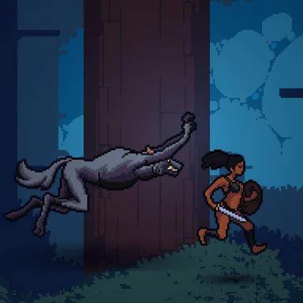

Plateformes
Escaping Monsters
Cours, saute et esquive à travers 15 niveaux de monstres pour rejoindre le campement.
En finitionPolitique de confidentialité


Le jeu
Un jeu de plateformes 2D en pixel art pour Android, qui se joue en mode paysage.
Les héros ne se battent pas : ils courent, sautent, font des doubles sauts et esquivent à travers des terres remplies de monstres pour rejoindre la sécurité du campement.
- Mondes : 3 biomes (Marais, Snow City, Forêt Minuscule) de 5 niveaux chacun, et une poursuite par un boss à la fin de chaque biome. Impossible d'attaquer les boss : il faut leur échapper.
- Étoiles : ★★★ en atteignant le campement dans le temps cible sans perdre de vie.
- Progression : une carte du monde, un campement qui sert de base, et 3 héros (1 au départ, 2 achetés avec les pièces gagnées grâce aux étoiles).
- Hors ligne avant tout : sauvegarde locale, plus une sauvegarde cloud facultative avec Google Play Jeux.
- Gratuit : les publicités n'apparaissent jamais en cours de partie, les vidéos récompensées sont facultatives, et « Supprimer les pubs » comme les packs de pièces sont vendus via la facturation Google Play.
- Langues : anglais et français.